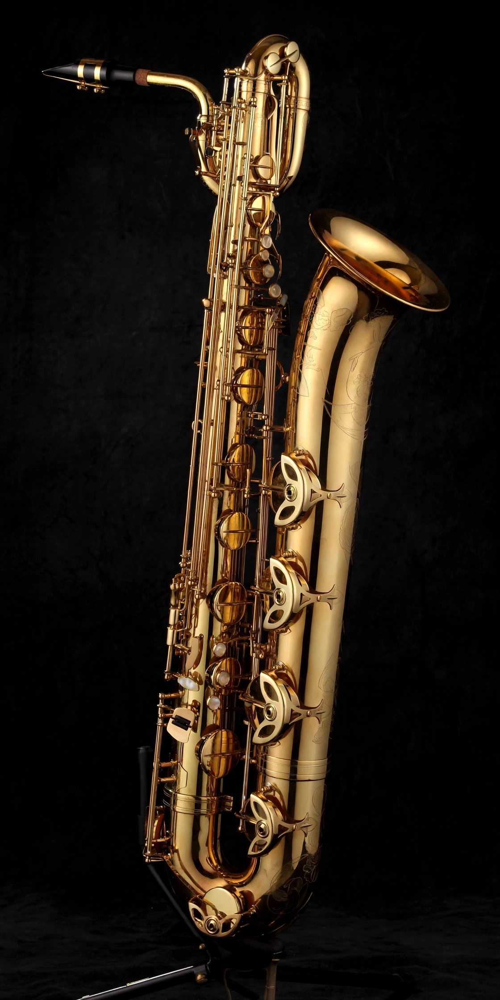

The baritone saxophone is a member of the saxophone family of instruments, larger (and lower-pitched) than the tenor saxophone, but smaller (and higher-pitched) than the bass saxophone. It is the lowest-pitched saxophone in common use.

The baritone saxophone is pitched in E♭, one octave below the alto saxophone. Modern instruments often have a low A key and a high F♯ key. Its distinctive loop at the top distinguishes its shape.
It is a standard member of concert bands and big band saxophone sections, anchoring the section. Notable jazz players include Gerry Mulligan, Pepper Adams, Harry Carney and Leo Parker.